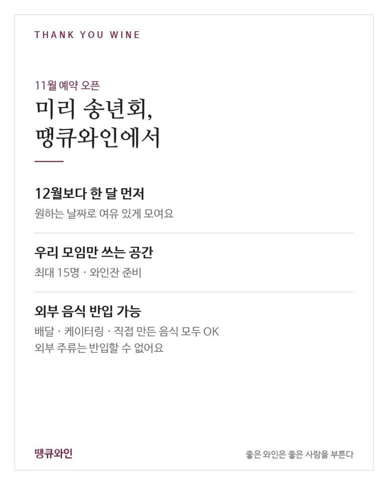
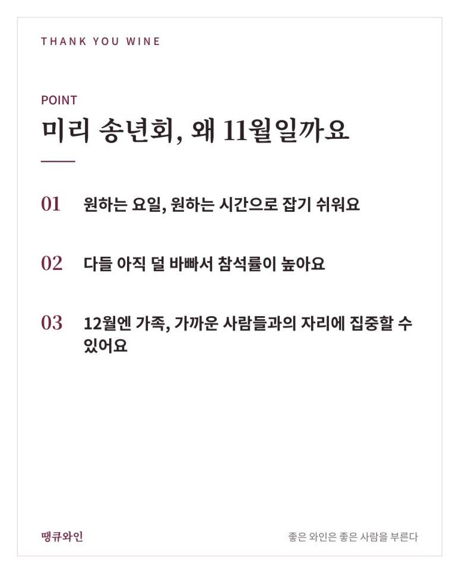
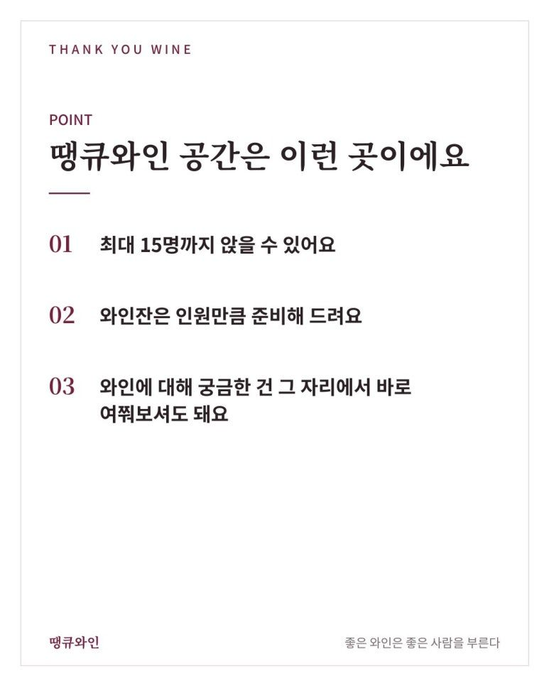
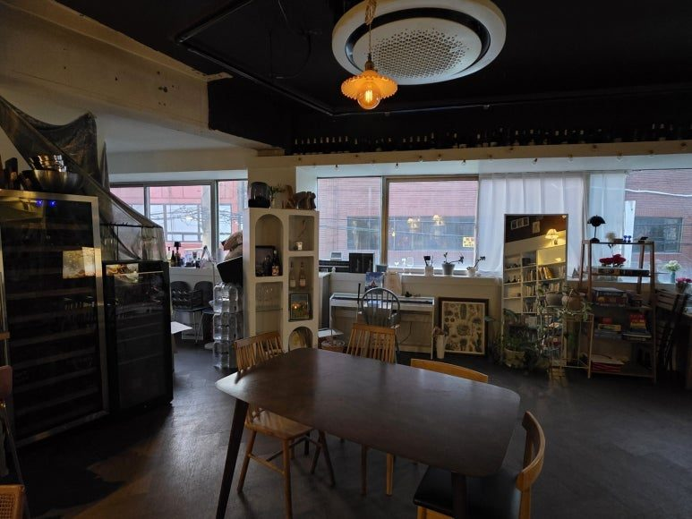
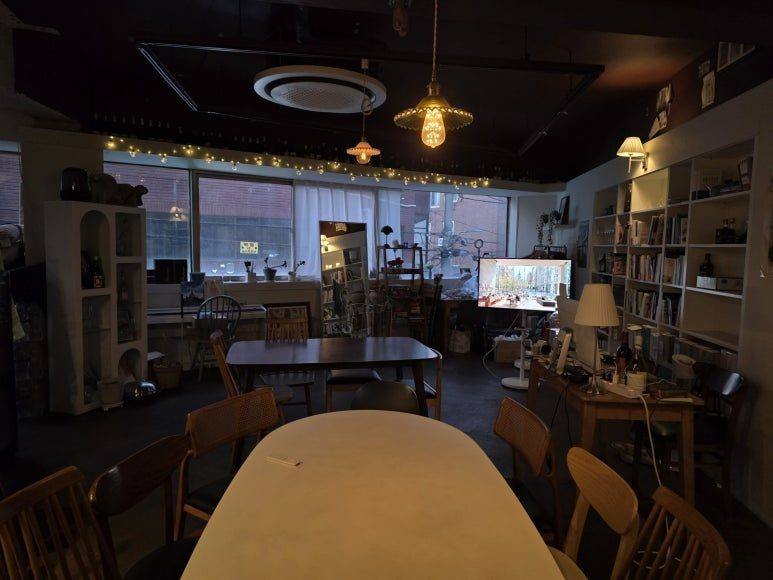
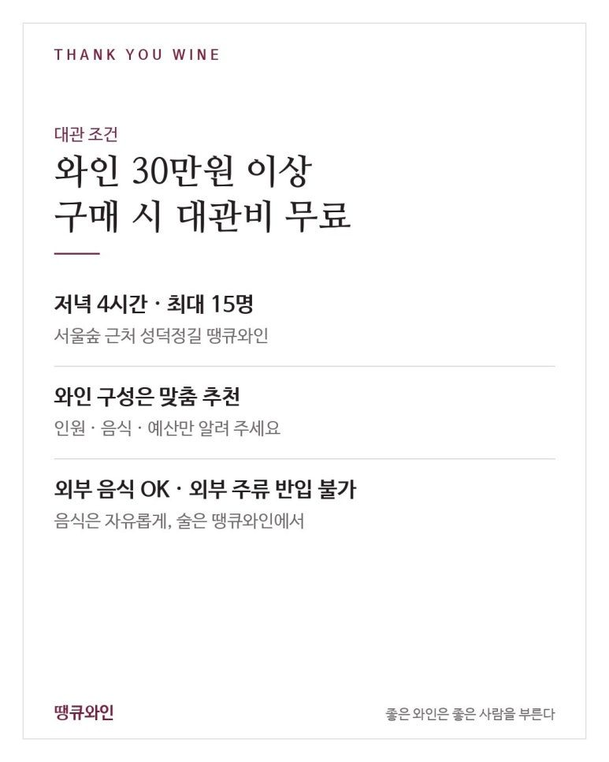
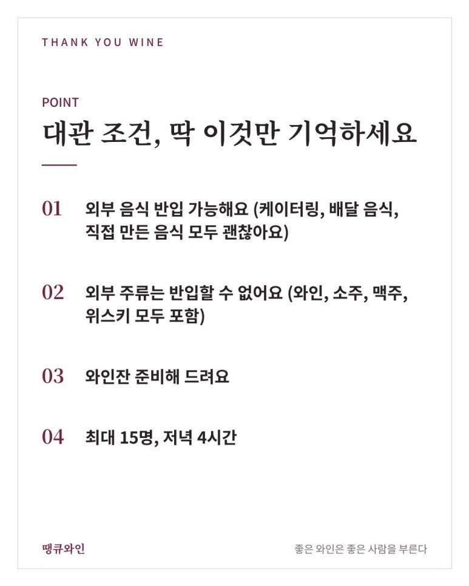
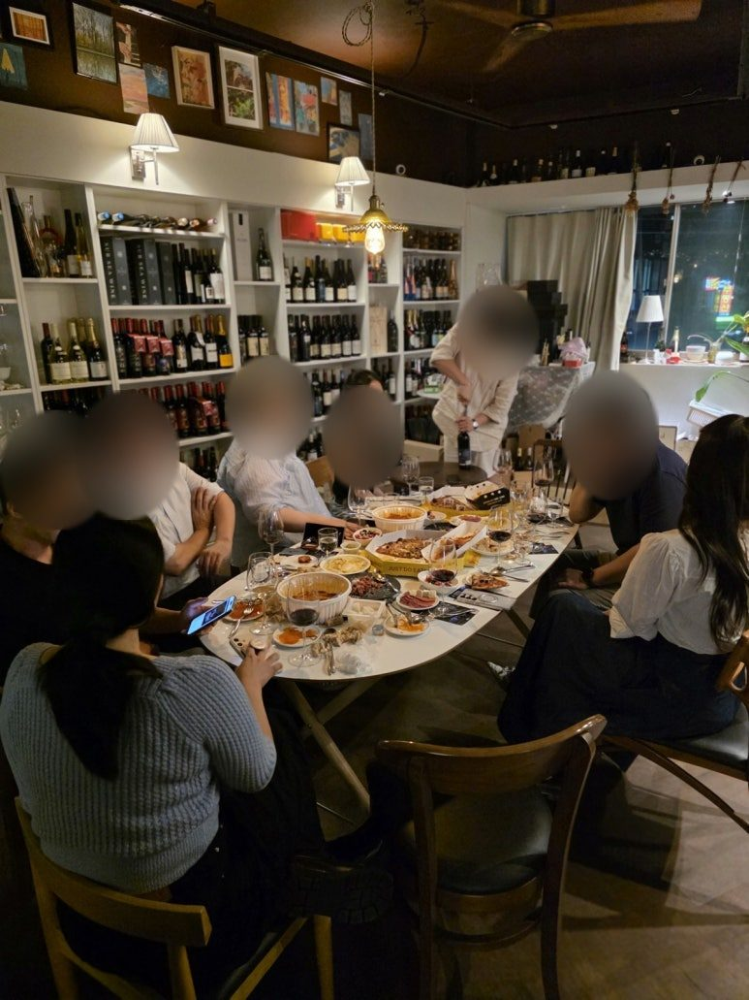
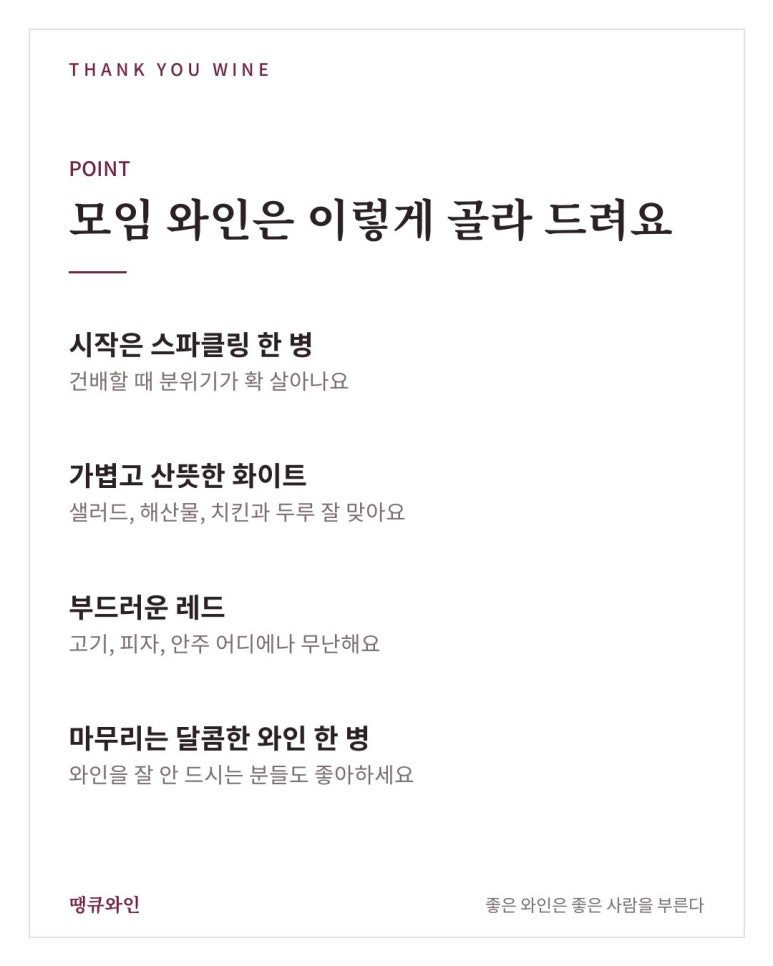
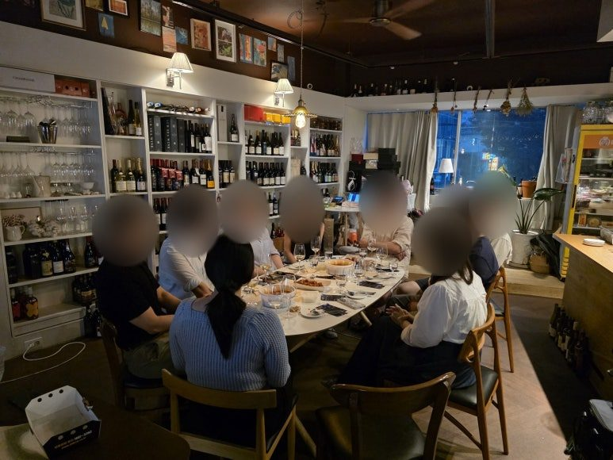

미리 송년회 대관 11월 예약 오픈
서울숲 땡큐와인, 외부 음식 반입 가능
연말이 가까워지면 꼭 나오는 이야기가 있죠.
연말이 가까워지면 꼭 나오는 이야기가 있죠.
"올해 송년회는 어디서 하지?"
식당은 예약이 꽉 차 있고, 와인바는 인원이 많으면 부담스럽고, 집으로 부르기엔 준비할 게 너무 많고요.
그래서 올해는 땡큐와인이 '미리 송년회' 공간 대관을 열어요.
12월에 몰리기 전, 11월부터 여유 있게 모여서 한 해를 정리해 보시는 건 어떨까요?
와인 매장이라 와인은 바로 옆 선반에서 골라 마시면 되고, 음식은 좋아하시는 걸 가져오시면 돼요.
와인을 구매하시면 대관비는 받지 않고, 외부 음식도 자유롭게 가져오실 수 있어요.
다만 와인을 파는 공간이라 외부 주류는 반입할 수 없어요. 와인은 땡큐와인에서 골라 주세요.


미리 송년회, 왜 11월일까요?
12월 송년회는 날짜 잡기부터 전쟁이에요.
금요일 저녁은 한 달 전에 이미 예약이 끝나 있고, 연말 분위기에 가격도 올라가고, 다들 일정이 겹쳐서 결국 반쯤만 모이는 경우가 많죠.
11월 중순부터 말까지는 상대적으로 여유가 있어요.
- 원하는 요일, 원하는 시간으로 잡기 쉬워요
- 다들 아직 덜 바빠서 참석률이 높아요
- 12월엔 가족, 가까운 사람들과의 자리에 집중할 수 있어요

한 해 고마웠던 분들과는 조금 일찍, 조금 더 여유 있게.
그게 '미리 송년회'예요.
땡큐와인 공간은 이런 곳이에요
땡큐와인은 서울숲 근처 성덕정길에 있는 작은 와인 매장이에요.
평소엔 와인을 고르고 사 가시는 공간이지만, 저녁에는 모임과 시음회를 여는 공간으로도 쓰고 있어요.
- 최대 15명까지 앉을 수 있어요
- 와인잔은 인원만큼 준비해 드려요
- 와인에 대해 궁금한 건 그 자리에서 바로 여쭤보셔도 돼요

동호회 정모, 팀 회식, 동기 모임, 생일 모임처럼 10명 안팎이 오붓하게 모이기 좋은 크기예요.
밖에서 시끄럽게 대화하기 힘든 식당과 달리, 우리 모임만 쓰는 공간이라 이야기 나누기에도 편하고요.

▲ 땡큐와인 매장, 와인 선반 앞 큰 테이블에서 모여요

▲ 창가 쪽 공간까지 함께 쓸 수 있어요

대관 조건, 딱 이것만 기억하세요
조건은 간단해요.
- 외부 음식 반입 가능해요 (케이터링, 배달 음식, 직접 만든 음식 모두 괜찮아요)
- 외부 주류는 반입할 수 없어요 (와인, 소주, 맥주, 위스키 모두 포함)
- 와인잔 준비해 드려요
- 최대 15명, 저녁 4시간


▲ 배달 음식, 케이터링을 가져와 함께한 모임
와인 구성은 모임 인원과 분위기, 예산을 말씀해 주시면 맞춰서 골라 드려요.
인원이 많지 않아도 괜찮아요. 6~8명 모임이라면 화이트, 레드, 스파클링을 조금씩 섞어서 여러 가지를 맛보는 구성으로 추천해 드리고, 10명이 넘는 모임이라면 1인 1병 기준으로 모두가 편하게 드실 수 있는 데일리 와인 위주로 맞춰 드려요.
모임 와인은 이렇게 골라 드려요
송년회 와인은 '비싼 와인'보다 '모두가 편하게 마시는 와인'이 훨씬 중요해요.
땡큐와인에서 모임용으로 가장 많이 나가는 구성은 이래요.
- 시작은 스파클링 한 병 : 건배할 때 분위기가 확 살아나요
- 가볍고 산뜻한 화이트 : 샐러드, 해산물, 치킨과 두루 잘 맞아요
- 부드러운 레드 : 고기, 피자, 안주 어디에나 무난해요
- 마무리는 달콤한 와인 한 병 : 와인을 잘 안 드시는 분들도 좋아하세요

와인을 잘 모르는 분이 많은 모임일수록
타닌이 강한 레드보다 과일 향이 풍부하고 부드러운 레드가 반응이 좋아요.
▲ 지난 모임에서 건배하는 모습
음식을 어떤 걸 준비하실지 미리 말씀해 주시면 거기에 맞춰 페어링까지 같이 봐 드려요.
예를 들어 족발이나 보쌈처럼 기름진 한식에는 산도가 있는 화이트나 가벼운 레드가, 피자나 파스타에는 과일 향이 좋은 이탈리아 레드가, 회나 초밥에는 깔끔한 화이트나 스파클링이 잘 어울려요.
메뉴가 여러 가지라면 화이트 한 종, 레드 한 종을 기본으로 두고 스파클링을 더하는 구성이 가장 실패가 없어요.
이런 모임에 특히 잘 맞아요
- 회사 팀 송년회 : 10명 안팎 팀이 조용히 이야기 나누며 한 해를 정리하기 좋아요
- 동호회, 동기 모임 : 정모 겸 송년회로 와인 한 잔씩 나누는 자리
- 거래처, 고마운 분들과의 자리 : 식당보다 조금 더 특별하고, 와인바보다 편한 분위기
- 가족, 친구 생일 모임 : 케이크와 음식만 챙겨 오시면 돼요
와인을 처음 접하는 분이 많은 자리라면 시작할 때 오늘 마실 와인을 짧게 소개해 드릴 수도 있어요.
어떤 와인인지 알고 마시면 한 잔이 훨씬 재미있어지거든요.

▲ 지난 모임 현장. 10명 안팎이 둘러앉기 좋은 크기예요
송년회 준비, 이것만 체크해 보세요
모임을 준비하는 분은 늘 바빠요. 아래 네 가지만 정해 주시면 나머지는 훨씬 수월해져요.
1. 인원 : 확정 인원과 최대 인원을 같이 알려 주시면 와인 수량을 넉넉하게 잡아 드려요
2. 음식 : 고기 위주인지, 해산물이나 한식인지에 따라 와인 구성이 달라져요
3. 분위기 : 조용히 대화하는 자리인지, 건배가 많은 신나는 자리인지
4. 예산 : 1인 기준 예산을 알려 주시면 그 안에서 가장 만족도 높은 구성으로 골라 드려요
와인은 1인 1병이면 넉넉하고, 2인 1병이면 가볍게 즐기는 정도예요.
술을 즐기는 분이 많은 모임이라면 1인 1병 기준을 추천해요.
이렇게 미리 정해 두면 당일에는 정말 '즐기기만' 하시면 돼요.
11월 예약 가능한 날
11월 저녁 대관은 아래 날짜에 받고 있어요.
- 11월 16일(월)
- 11월 20일(금)
- 11월 24일(화)
- 11월 30일(월)
12월 날짜도 미리 받고 있어요.
- 12월 1일(화), 7일(월), 11일(금), 14일(월)
- 12월 18일(금), 21일(월), 22일(화), 23일(수)
하루에 한 팀만 받기 때문에 날짜는 먼저 연락 주신 순서대로 확정해 드려요.
원하시는 날짜가 이미 찼다면 가까운 다른 날로 안내해 드릴게요.
예약은 이렇게 해 주세요
1. 원하시는 날짜, 인원, 대략적인 예산을 카카오톡이나 전화로 알려 주세요
2. 모임에 맞는 와인 구성을 추천해 드려요
3. 와인 구성이 정해지면 날짜를 확정해 드려요
4. 당일엔 음식만 챙겨 오시면 돼요. 와인과 잔은 준비해 둘게요 (외부 주류는 반입 불가예요)
와인은 미리 칠링해 두고, 레드는 마시기 좋은 온도로 맞춰 둘게요.
모임이 끝나고 남은 와인은 마개를 막아 가져가셔도 돼요.
연말 선물용 와인이 필요하시면 모임 와인과 함께 준비해 드릴 수도 있어요. 고마운 분들께 한 병씩 나눠 드리는 것도 송년회를 기억에 남게 하는 방법이에요.
자주 묻는 질문
Q. 음식은 어떻게 준비하나요?
A. 외부 음식은 자유롭게 가져오셔도 돼요. 배달 음식, 케이터링, 직접 만든 음식 모두 괜찮아요.
Q. 마시던 와인이나 다른 술을 가져가도 되나요?
A. 외부 주류는 반입할 수 없어요. 와인 말고 다른 술이 필요하시면 미리 말씀해 주세요. 모임에 맞게 함께 고민해 드릴게요.
Q. 와인을 잘 몰라도 괜찮을까요?
A. 그럼요. 모임 분위기와 음식만 알려 주시면 와인은 저희가 맞춰 드려요.
Q. 몇 명까지 가능한가요?
A. 최대 15명까지 앉으실 수 있어요. 올해 고마웠던 분들과 한 해를 정리하는 자리, 붐비는 12월보다 조금 일찍 여유 있게 가져 보세요. 날짜와 인원만 알려 주시면 나머지는 땡큐와인이 함께 준비할게요. 어떤 와인을 골라야 할지 막막하셔도 괜찮아요. 모임 이야기를 들려주시면 거기서부터 같이 시작하면 돼요. 편하게 연락 주세요. 미리 송년회 자리, 기분 좋게 만들어 드릴게요.
이 글은 땡큐와인 네이버 블로그에 먼저 올린 글이에요.